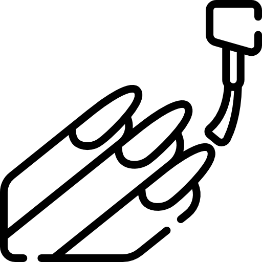
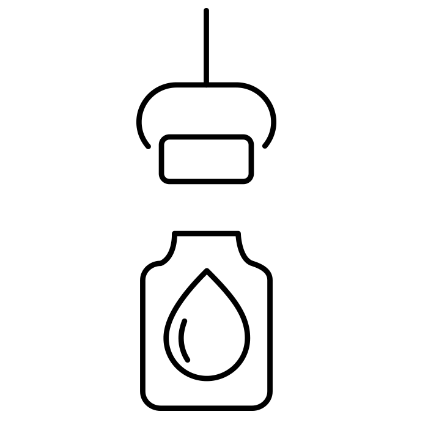
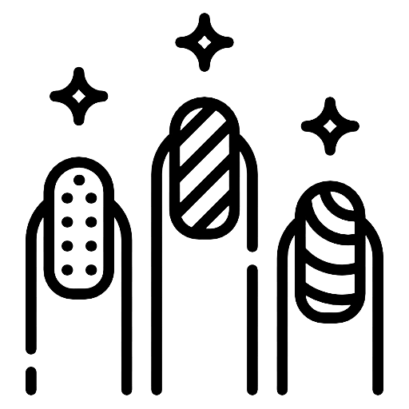

Servicios y precios
Para ayudarte a elegir mejor, te presentamos nuestros servicios, además de sus precios correspondientes.
Tabla de precios |
Nails Art |
| Servicio |
Duracion (días) |
Precio (UYU) |
| Esmaltado Tradicional |
7 |
200 |
| Kapping |
20 |
450 |
| Esmaltado Semipermanente |
14 |
400 |
| Esculpida |
90 |
600 |
| Esculpidas (moldes mayores a 4) |
90 |
750 |
Mantenimiento |
| Servicio |
Precio (UYU) |
| Mantenimineto de esculpido |
400 |
| Mantenimineto de kapping |
350 |
| Retiro de esculpido |
250 |

Esmaltado tradicional
Para todos nuestros esmaltados realizamos un prodedimiento de manicura rusa: Se cortan o liman los bordes de las uñas, los excesos de cutículas y hasta se retira la banda epidérmica transversal del pliegue proximal con tijeras, tornos y removedores de cutícula; al finalizar, se realizan masajes a las manos y se procede a aplicarse el esmaltado, en este caso en seco.

Kapping
El Kapping consiste en aplicar una fina capa de acrílico o gel fortificador sobre la uña que actuará como una barrera protectora. A diferencia de las uñas esculpidas tradicionalmente, este baño en gel kapping no alarga la uña natural sino que acompaña el crecimiento de la misma y dura hasta 20 días.

Esmaltado semipermanente
Se trata de una técnica estética que consigue mayor duración, uñas más largas, con colores atractivos e incluso la posibilidad de tener una uña postiza donde falta la natural por un accidente. Para ello, se seca el esmaltado con el uso de lámparas LED.
Esculpido
Las uñas esculpidas son extensiones que se construyen a partir de la uña natural con material acrílico en nuestro caso. Estas permiten restaurar y reconstruir uñas mordidas o simplemente, lucir uñas más largas, algo que las hace sumamente atractivas.